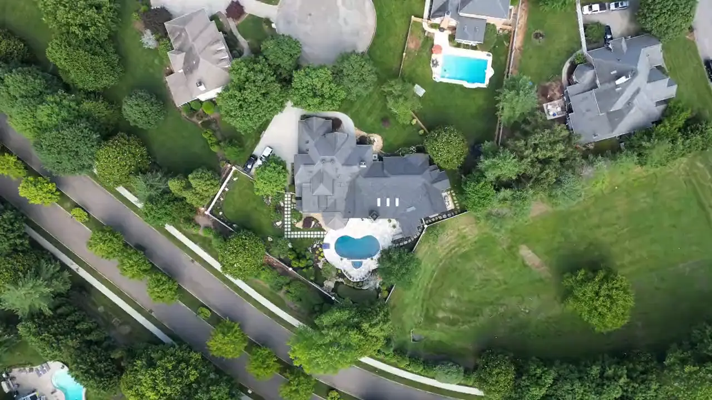

A 110 KB webp still paints instantly. The clip is preload="none" and never touches the network until the hero is on screen.
Essex County, NJ · Since 1998
We keep the whole property.
Weekly maintenance, spring and fall cleanups, and the beds and borders in between — one crew, same trucks, every visit.
- 27years on these streets
- 410properties every week
- 4.9★from 186 reviews
What the recipe ships
Six seconds, 650 KB, no library.
Forward 3.2s + reversed tail, duplicate junction frame trimmed. Boomerang loops cannot show a seam.
brightness(.72) on the video plus a three-stop scrim. Headline contrast is a design decision, not luck.

Variant B · zero video bytes
Same look. No clip.
A 20-second CSS ken-burns drift on the still. Roughly 80% of the effect for 110 KB and no video pipeline — the rung to reach for when a clip is not worth the cost.
Lab notes
Reduced motion
With prefers-reduced-motion: reduce the video is
hidden and its poster stands in, the ken-burns drift stops at its rest
frame, and the ticker parks. Nothing on the page moves and nothing
disappears. Source clip: Pexels #17380737, free licence.